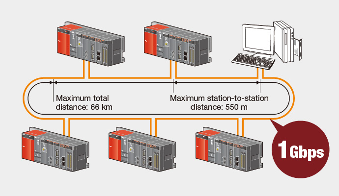
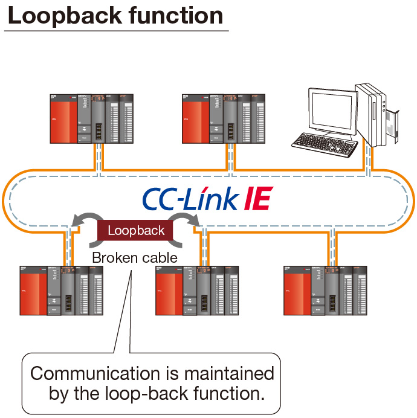
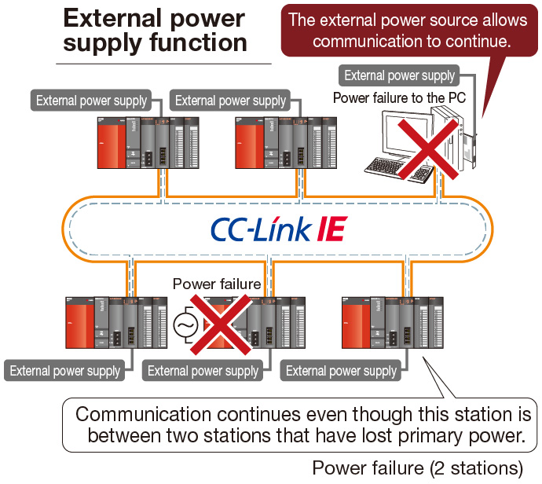
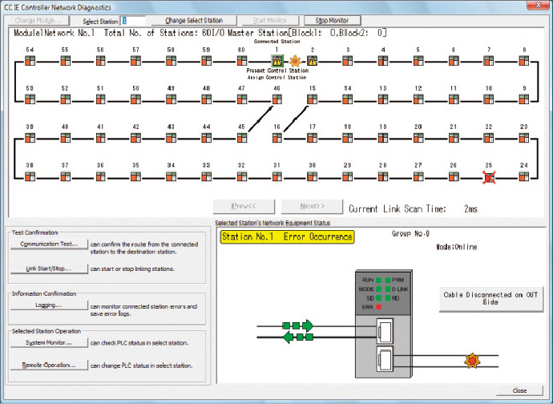

Controllers MELSEC-Q Series
Product features -Network-

CC-Link IE Controller Network
Distributed control network designed for large bandwidth and high-speed
CC-Link IE Controller Network module
- Standard model
- With external power supply function
- Commercially available Ethernet components can be used for significant cost savings over alternative networks.
- Deterministic, reliable performance helps to reduce operation cycle time. This cyclic data exchange is fixed and will not suffer from degraded performance even when large volumes of data are transferred.
- Share massive amounts of data between controllers. (Up to 256K bytes of network shared memory per station)
- The CC-Link IE Controller Network modules, QJ71GP21-SX and QJ71GP21S-SX, may be configured as normal stations, or the control station.


■ Performance Specifications*1
| Item | Specification | ||
|---|---|---|---|
| Max. link points per network | LB | 32K points (32768 points, 4 KB) (Safety CPU: 16K points (16384 points, 2 KB)) |
|
| LW | 128K points (131072 points, 256 KB) (Safety CPU: 16K points (16384 points, 32 KB)) |
||
| LX | 8K points (8192 points, 1 KB) | ||
| LY | 8K points (8192 points, 1 KB) | ||
| Max. link points per station | Regular mode | Extended mode*2 | |
| LB | 16K points (16384 points, 2 KB) | 32K points (32768 points, 4 KB) | |
| LW | 16K points (16384 points, 32 KB) | 128K points (131072 points, 256 KB) | |
| LX | 8K points (8192 points, 1 KB) | 8K points (8192 points, 1 KB) | |
| LY | 8K points (8192 points, 1 KB) | 8K points (8192 points, 1 KB) | |
| Communication speed | 1 Gbps | ||
| Number of stations per network | 120 (1 control station plus 119 normal stations) | ||
| Connection cable | Optical fiber cable (Multi-mode fiber) | ||
| Overall cable distance | 66000 m (When 120 stations are connected) | ||
| Station-to-station distance (Max.) | 550 m (Core/Clad = 50/125 (m)) | ||
| Max. number of networks | 239 | ||
| Max. number of groups | 32 | ||
| Network topology | Ring | ||
- *1.When the control station is a Universal model QCPU.
- *2.To use extended mode, (QJ71GP21(S)-SX) network modules and Universal model CPUs whose first five serial number digits are 12052 or later are required. All stations in the network must support the extended mode. Also, GX Works2 version 1.34 L or later is required.
Designed to continue functioning even in the worst possible scenarios
- The use of fiber optic cables which are completely immune to EMI and RFI noise allows the network to function in environments where other networks cannot. The dual loop design allows the network to continue functioning even if cables become damaged or the power is lost to a station.
- Additionally, CC-Link IE stations can be powered using an external supply. That allows communication to continue normally in the event of a loss of the primary power supply, without relying on the loop-back function.


Visual display of network connection status

View the network connection status of entire system to identify problems at a glance. The cause of problems can be quickly identified and suggested remedies implemented to minimize down time.